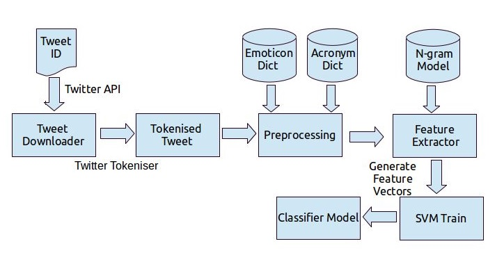
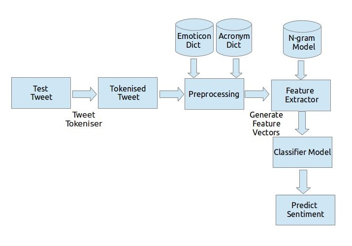
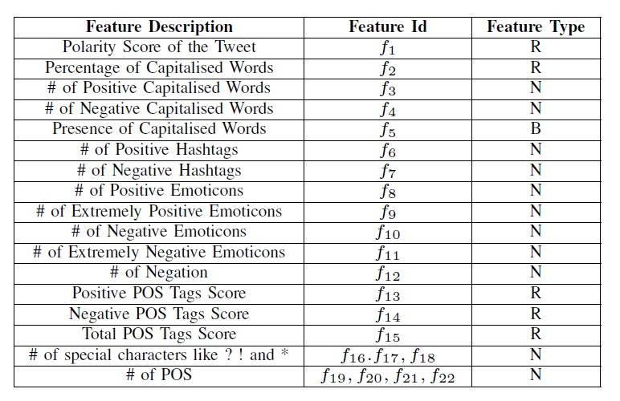
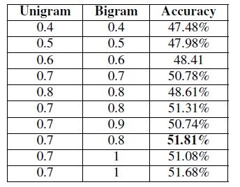
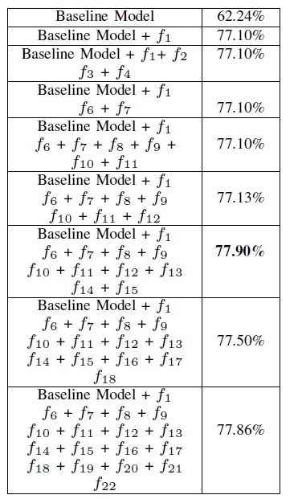
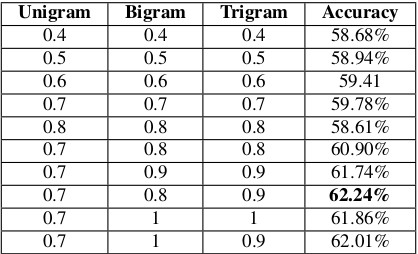
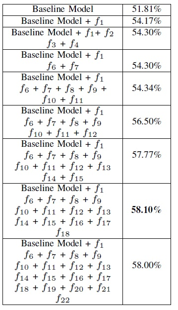

Microblogging today has become a very popular communication tool among Internet users. Millions of users share opinions on different aspects of life everyday in popular websites such as Twitter, Tumblr and Facebook. Spurred by this growth, companies and media organisation are increasingly seeking ways to mine these social media for information about what people think about their companies and products. Political parties may be interested to know if people support their program or not. Social organizations may ask people's opinion on current debates. All this information can be obtained from microblogging services, as their users post their opinions on many aspects of their life regularly. In this work, we present a method which performs 3-class classification of tweet sentiment in Twitter[7]. We present an end to end system which can determine the sentiment of a tweet at two levels- phrase level and message level. We leverage the features of tweets to build the classifier which achieves an accuracy of 77.90% at phrase level and 58.36% at message level.
1. Introduction
With the enormous increase in web technologies, number of people expressing their views and opinions via web are increasing. This information is very useful for businesses, governments and individuals. With over 500+ million Tweets (short text messages) per day, Twitter is becoming a major source of information. Twitter is a micro-blogging site, which is popular because of its short text messages popularly known as "Tweets". Tweets have a limit of 140 characters. Twitter has a user base of 240+ million active users and thus is a useful source of information. Users often discuss on current affairs and share their personals views on various subjects via tweets. Out of all the popular social media's like Facebook, Google+, Myspace and Twitter, we choose Twitter because of the following reasons:
Twitter contains an enormous number of text posts and it grows every day. The collected corpus can be arbitrarily large.
Twitters audience varies from regular users to celebrities, company representatives, politicians, and even
country presidents. Therefore, it is possible to collect
text posts of users from different social and interests
groups.
Tweets are small in length, thus less ambigious
Tweets are unbiased in nature
Using this social media we built models for classifying
"tweets" into positive, negative and neutral classes.
Scope
We build models for two classification tasks:
1)A 3-way classification of already demarcated phrases in a tweet into positive, negative and neutral classes.
2)Another 3-way classification of entire message into positive, negative and neutral classes.
We experiment with the baseline model and feature based model. We do an incremental analysis of the features. We also experiment with a combination of models: combining baseline and featurebased model.
The rest of the work is organised as follows. In section 2 we
describe works related to this task. Section 3 discusses the Dataset,
Resources and Tools followed by the explanation of Approach. Section
4 gives a detailed analysis of Experiments and Results followed by Conclusion in section
5.
2. Related Work
With the popularity of blogs and social networks, opinion mining and sentiment analysis became a field of interest in the scientific community. A very broad overview of the existing work was presented in (Pang and Lee, 2008). In their survey, the authors describe existing techniques and approaches for an opinion-oriented information retrieval. In Yang et al. (2007), the authors use web-blogs to construct a corpora for sentiment analysis and use emoticons assigned to blog posts as indicators of users' mood. The authors applied SVM and CRF learners to classify sentiments at the sentence level and then investigated several strategies to determine the overall sentiment of the document.
Some of the early and recent results on sentiment analysis of Twitter data are by Go et al. (2009), (Bermingham and Smeaton, 2010) and Pak and Paroubek (2010). Go et al. use distant learning to acquire sentiment data. They use tweets ending in positive emoticons like ":)" ":-)" as positive and negative emoticons like " :(" ":-(" as negative. They build models using Naive Bayes, MaxEnt and Support Vector Machines (SVM), and they report that SVM outperforms other classifiers. (Agarwal et al., 2011) performed three class (positive, negative and neutral) classification of tweets. They collected their dataset using Twitter stream API and asked human judges to annotate the data into three classes. They had 1709 tweets of each class making a total of 5127 in all. In their research, they introduced POS-specific prior polarity features along with twitter specific features.
In our work we use SVM classifier to decide the polarity of the tweets. Along with that we provide an useful insight on how preprocessing should be done on tweet. Our method of Feature Identification and Polarity Score is inspired by the work done by Agarwal et al. In feature vector approach, we show the contribution of individual NLP and Twitter specific features.
3. Approach
3.1. Dataset
Twitter is a social networking and microblogging service
that allows users to post real time messages, called tweets.
Tweets are short messages, restricted to 140 characters in
length. Due to the nature of this microblogging service, people
use acronyms, make spelling mistakes, use emoticons and other
characters that express special meanings. Following is a brief
terminology associated with tweets.
Emoticons: These are facial expressions, pictorially
represented using punctuation and letters; they express
the user's mood.
Target: Users of Twitter use the @ symbol to refer to
other users on the microblog. Referring to other users
in this manner automatically alerts them.
Hashtags: Users usually use hashtags to mark topics.
This is primarily done to increase the visibility of their
tweets.
In this project we use the dataset provided in SemEval 2013, Task 9 [3]. The dataset consists of tweet id's which are
annotated with positive negative and neutral labels. The dataset is already divided into three sets: Training, Development and
Testing. For sentiment analysis at the phrase level, the dataset contains 10586 phrases (which includes both the training and
the development set) from different tweets and 4436 phrases from different tweets for testing purpose. Since, some of the
tweets were not available while downloading, we are left with 8866 phrases for training and 3014 phrases for testing. For
the second sub task, which is analysing the sentiment of the entire tweet we have 9684 tweets id's (which includes both
the training and the development set) and 3813 tweets id's for testing. As mentioned before some of the tweets were not
available while downloading. This leaves us with 9635 tweets for testing and 3005 tweets for testing.
3.2. Resources and Tools
In this work we use three external resources in order to
preprocess the data and provide prior score for some of the
commonly used words.
Emoticon Dictionary: We use the emoticons list as
given in [4] and manually annotate them. We categorise the
emoticons into four classes: a) Extremely- Positive b)
Positive c) Extremely- Negative d) Negative
Acronym Dictionary: We crawl the website [1] in
order to obtain the acronym expansion of the most
commonly used acronyms on the web. The acronym
dictionary helps in expanding the tweet text and
thereby improves the overall sentiment score (discussed later). The acronym dictionary has 5297 entries. For example, asap has translation As soon as
possible.
AFINN 111: AFINN [2] is a list of English words
rated for valence with an integer between minus five
(negative) and plus five (positive). The words have
been manually labeled by Finn rup Nielsen in 2009-
2011.
We use the following tools in order to successfully implement our approach:
Tweet Downloader [6] which is provided by the SemEval Task Organiser 2013. It contains a python script
which downloads the tweets given the tweet id.
Tweet NLP [8], a twitter specific tweet tokeniser
and tagger. It provides a fast and robust Java-based
tokeniser and part-of-speech tagger for Twitter.
LibSVM [5] is an integrated software for support vec-
tor classification. It supports multiclass classification.
BeautifulSoup Python,the library provides an interface
for crawling the web page. We use this for crawling
the acronym dictionary.
SciKit Python Library, for Naive Bayes Classifier
Svmutil Python Library, for implementing Support
Vector Machine
3.3. Preprocessing
A. Tokenisation
After downloading the tweets using the tweet id's provided
in the dataset, we first tokenise the tweets. This is done using
the Tweet-NLP developed by ARK Social Media Search. This
tool tokenises the tweet and returns the POS tags of the tweet
along with the confidence score. It is important to note that
this is a twitter specific tagger in the sense it tags the twitter
specific entries like Emoticons, Hashtag and Mentions too.
After obtaining the tokenised and tagged tweet we move to
the next step of preprocessing.
B. Remove Non-English Tweets
Twitter allows more than 60 languages. However, this work
currently focuses on English tweets only. We remove the
tweets which are non-English in nature.
C. Replacing Emoticons
Emoticons play an important role in determining the sentiment of the tweet. Hence we replace the emoticons by their
sentiment polarity by looking up in the Emoticon Dictionary.
D. Remove URL
The url's which are present in the tweet are shortened using
TinyUrl due to the limitation on the tweet text. These shortened
url's did not carry much information regarding the sentiment
of the tweet. Thus these are removed.
E. Remove Target
The target mentions in a tweet done using '@' are usually
the twitter handle of people or organisation. This information
is also not needed to determine the sentiment of the tweet.
Hence they are removed.
F. Replace Negative Mentions
Tweets consists of various notions of negation. In general,
words ending with 'nt' are appended with a not. Before we
remove the stopwords 'not' is replaced by the word 'negation' Negation play a very important role in determining the
sentiment of the tweet. This is discussed later in detail.
G. Hashtags
Hashtags are basically summariser of the tweet and hence
are very critical. In order to capture the relevant information
from hashtags, all special characters and punctuations are
removed before using it as a feature.
H. Sequence of Repeated Characters
Twitter provides a platform for users to express their
opinion in an informal way. Tweets are written in random
form, without any focus given to correct structure and spelling.
Spell correction is an important part in sentiment analysis
of user-generated content. People use words like 'coooool'
and 'hunnnnngry' in order to emphasise the emotion. In
order to capture such expressions, we replace the sequence
of more than three similar characters by three characters. For
example, wooooow is replaced by wooow. We replace by
three characters so as to distinguish words like 'cool' and
'cooooool'.
I. Numbers
Numbers are of no use when measuring sentiment. Thus,
numbers which are obtained as tokenised unit from the tokeniser are removed in order to refine the tweet content.
J. Nouns and Prepositions
Given a tweet token, we identify the word as a Noun word
by looking at its part of speech tag given by the tokeniser. If
the majority sense (most commonly used sense) of that word is
Noun, we discard the word. Noun words dont carry sentiment
and thus are of no use in our experiments. The same reasoning
go for prepositions too.
K. Stop-word Removal
Stop words play a negative role in the task of sentiment
classification. Stop words occur in both positive and negative training set, thus adding more ambiguity in the model
formation. And also, stop words don't carry any sentiment
information and thus are of no use to us. We create a list of
stop words like he, she, at, on, a, the, etc. and ignore them
while scoring the sentiment.
3.4. Models
In message based sentiment analysis we build baseline model and feature based model. We also try to perform classification using a combination of both these models. Our approach can be divided into various steps. Each of these steps are independent of the other but important at the same time. Figure 1 and 2 represent the approach for training and testing the model.

Figure 1.
Flow Diagram of Training: Hybrid Model

Figure 2.
Flow Diagram of Testing: Hybrid Model
A. Baseline Model
In the baseline approach, we first clean the tweets. We
perform the preprocessing steps listed and learn
the positive, negative and & neutral frequencies of unigrams,
bigrams and trigrams in training. Every token is given three
probability scores: Positive Probability (Pp, Negative Probability (Np) and Neutral Probability (NEp).
Pf = Frequency in Positive Training Set Nf = Frequency in Negative Training Set NEf = Frequency in Neutral Training Set Pp = Positive Probability = Pf /(Pf + Nf + NEf ) Np = Negative Probability = Nf /(Pf + Nf + NEf NEp = Neutral Probability = NEf /(Pf + Nf + NEf )
Next we create a feature vector of tokens which can distinguish the sentiment of the tweet with high confidence. For example, presence of tokens like am happy!, love love, bullsh*t ! helps in determining that the tweet carries positive, negative or neutral sentiment with high confidence. We call such words, Emotion Determiner. A token is considered Emotion Determiner using something similar to the theory of Triangular Inequality. The probability of emotion for any one sentiment must be greater than or equal to the probability of the other two sentiments. by a certain threshold ted. It is found that we have different thresholds for unigrams, bigrams and trigrams. The parameter for the three tokens is tuned and the optimal threshold values are found. Note, before calculating the probability values, we filter out those tokens which are infrequent (appear in less than 10 tweets). Table 4 shows a list of unigrams, bigrams and trigrams which obey the minimum optimal threshold criteria. It can be observed that the presence of such tokens guarentees the sentiment of the tweet with a high confidence.
B. Feature Based Model
A. Prior Polarity Scoring
A number of our features are
based on prior polarity of words. For obtaining the prior
polarity of words, we use AFINN dictionary and extend it
using senti-Wordnet. We first look up tokens in the tweet in
the AFINN lexicon. This dictionary of about 2490 English
language words assigns every word a pleasantness score between -5 (Negative) and +5 (Positive). We first normalize the
scores by diving each score by the scale (which is equal to 5).
If a word is not directly found in the dictionary we retrieve all synonyms from Wordnet. We then look for each of the
synonyms in AFINN. If any synonym is found in AFINN, we
assign the original word the same pleasantness score as its
synonym. If none of the synonyms is present in AFINN, we
perform a second level look up in the senti-Wordnet dictionary.
If the word is present in senti-Wordnet, we assign the score
retrieved from senti-Wordnet (between -1 and +1).
B. Features We propose a set of features listed in Table
1 for our experiments. These are a total of 22 features. We
calculate these features for the whole tweet in case of message
based sentiment analysis and for the extended phrase (obtained
by taking 2 tokens on either sides of the demarcated phrase)
in case of phrase based sentiment analysis. We refer to these
features as Emotion-features throughout the paper. Our features
can be divided into three broad categories: ones that are
primarily counts of various features and therefore the value
of the feature is a natural number N. Second, features whose
value is a real number R. These are primarily features that
capture the score retrieved from AFINN. Thirdly, features
whose values are boolean B. These are bag of words, presence
of exclamation marks and capitalized text. Table 1 summarises
the features used in our experiment.
Table 1.
N refers to set of feature which is a positive value; R refers to real-valued feature; B refers to features having Boolean Value

4. Evaluation and Results
We perform the following experiments:
Positive versus Negative versus Neutral for Phrase
Level Sentiment Analysis
Positive versus Negative versus Neutral for Message
Level Sentiment Analysis
For each of the classification tasks we present two models,
as well as results for the combinations of these models:
Baseline Model
Feature Based Model
Baseline plus Feature Based Model
For the Baseline plus Feature Based Model, we present
feature analysis to gain insight about what kinds of features
are adding most value to the model.
Experimental-Set-up: For all our experiments we use
Support Vector Machines (SVM). We had also done an
analysis using Naive Bayes Classifier but the accuracies
obtained were not upto the mark.
A. Phrase Level Sentiment Analysis
For phrase level sentiment analysis the major challenge was
to identify the sentiment of the tweet pertaining to the context
of the tweet. We know that tokens can represent different
aspects in different contexts. In order to capture this sentiment,
we extend the phrase on either side by size two. That is given a
phrase and the tweet in which it belongs, we extract the phrase
which includes tokens on either side of the phrase. We believe
that this helps in taking into consideration the context of the
tweet. But after experimentation it was found that the accuracy
of the system dropped for both the models. For the hybrid
model (combining baseline and feature based) the accuracy
for taking a window of 2 is 74.59% and for a window of 1
is 75.28%. This is less than what we achieve by taking tha
phrase only. Therefore we only use the phrases as demarcated
to predict the sentiment.
1) Baseline Model: For the baseline model, we only consider the unigrams and bigrams. Taking the trigrams leads
to drop in accuracy. We perform the parameter tuning for
threshold (ted). It is listed in Table 2. It is found that the system
performs best for thresholds 0.7 and 0.8 for unigram and
bigram respectively. The accuracy achieved for the baseline
model is 62.24%. This is a hard line achieving 29% more
than the chance probability.
Table 2.
Parameter Tuning for Baseline: Phrase Based Model

2) Feature Based Model: For the feature based model we
used the features as listed in Table 1. The model is trained
using the features. We create feature vectors for the test
samples and feed it to the model. The accuracy achieved using
all the features is 77.86%.
3) Baseline plus Feature Based Model: Table 3 presents
classifier accuracy when features are added incrementally. We
start with our baseline model and subsequently add various
sets of features. First, we add polarity score (rows f1 ) in
Table 1) and observe a gain in 15% performance. Capitalisation
Features also do not help much (rows f2 , f3 , f4 ). Next, we
add all hashtag based features (rows f6 , f7 ) and observe no
improvement. Similary with addition of emoticons (rows f8 ,
f9 , f10 , f11 ) and find no improvement. This is probably due
to the short nature of the phrases, emoticons and hashtags
are not major contributors for improving the accuracy of the
classifier. We see an additional increase in accuracy by 0.03%
when we add negation (rows f12 ). The accuracy jumps to
77.90% when we add prior polarity score of POS tags (rows
f16 , f17 , f18 ). Adding special characters (rows f16 , f17 , f18, f16 , f17 , f18 ). Adding special characters (rows f16 , f17 , f18
) drops the accuracy to 77.50%. Next, adding capitalisation
features (rows f19 , f20 , f21 , f22 ) improves the accuracy by
0.46%. From these experiments we conclude that the most
important features are those that involve prior polarity of POS
tags. All other features play a marginal role in achieving the
best performing system.
Table 3.
Accuracy for 3-way classification task using baseline and features. All fi refers to Table 1

B. Message Level Sentiment Analysis
For message level sentiment analysis the most difficult part
was to resolve ambiguity. A message can contain both positive
and negative sentiments and hence it is difficult to determine
the stronger sentiment in the tweet. As a result the highest
accuracy achieved is also not at par with the phrase based
sentiment analysis. For message based sentiment analysis, the
best accuracy achieved is 58.13%
1) Baseline Model: For the baseline model, we consider
the unigrams bigrams and trigrams. We perform the parameter
tuning for threshold (ted ). It is listed in Table 4. It is found
that the system performs best for thresholds 0.7, 0.9 and 0.8
for unigram, bigram and trigram respectively. The accuracy
achieved for the baseline model is 51.81%. This is a hard line
achieving 18% more than the chance probability.
Table 4. Paramter Tuning for Baseline: Message Level.

2) Feature Based Model: For the feature based model we
used the features as listed in Table 1. The model is trained
using the features. We create feature vectors for the test
samples and feed it to the model. The accuracy achieved using
all the features is 57.43%.
3) Baseline plus Feature Based Model: Table 5 presents
classifier accuracy when features are added incrementally. We
start with our baseline model and subsequently add various
sets of features. First, we add polarity score (rows f1 ) in
Table 1) and observe a gain in 3% performance. Capitalisation
Features also do not help much (rows f2 ,f3 ,f4 ) and improves
only by 0.12%. Next, we add all hashtag based features
(rows f6 , f7 ) and observe no improvement. With addition
of emoticons (rows f8 ,f9 ,f10 , f11 ) we find minor increment
in the performance by 0.04%. We see an additional increase
in accuracy by 2% when we add negation (rows f12 ). Thus
negation plays an important role in improving the accuracy
of the classifier in a substantial way. The accuracy jumps to
57.77% when we add prior polarity score of POS tags (rows
f16 , f17 , f18 ). Adding special characters (rows f16 ,f17 ,f18 )
improves the accuracy to 58.10%. Next, adding capitalisation
features (rows f19 ,f20 ,f21 , f22 ) drops the accuracy by 0.10%.
From these experiments we conclude that the most important
features are those that involve prior polarity of POS tags.
All other features play a marginal role in achieving the best
performing system.
Table 5. Accuracy for 3-way classification task using baseline and features. All fi refer to Table 1

5. Conclusion
We presented results for sentiment analysis on Twitter.
We report an overall accuracy for 3-way classification tasks:
positive versus negative versus neutral. We presented a comprehensive set of experiments for two level of classification: message level and phrase level on manually annotated data
that is a random sample of stream of tweets. We investigated
two kinds of models: Baseline and Feature Based Models and
demonstrate that combination of both these models perform the
best. For our feature-based approach, we do feature analysis
which reveals that the most important features are those that
combine the prior polarity of words and their parts-of-speech
tags. In future work, we will explore even richer linguistic
analysis, for example, parsing, semantic analysis and topic modeling.